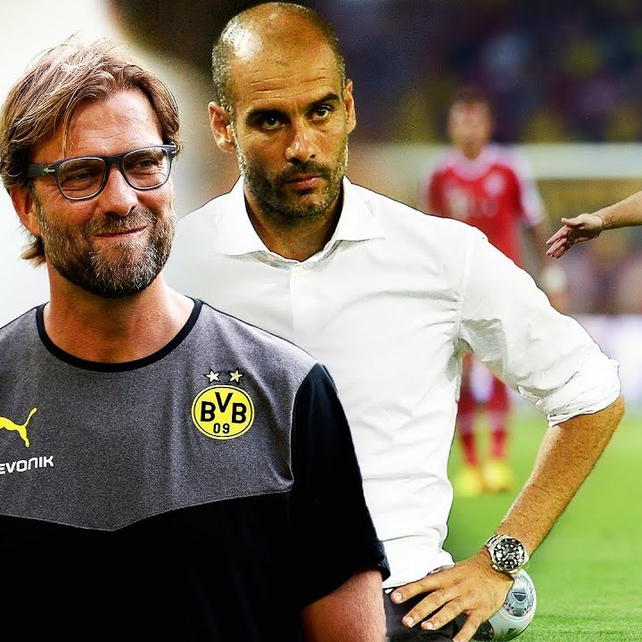

Meu nome é Gabriel Pinheiro, nasci dia no 30 de janeiro de 2008 na cidade de Indaiatuba, onde basicamente passei minha vida toda, exceto em 2024 quando me mudei para o Rio Grande do Sul, mas foi só um ano lá e logo eu voltei para minha cidade e terminei o meu ensino médio. O que eu aprendi lá? Nada kkk, achou que eu fosse ter uma lição pra levar pra vida?
O meu primeiro projeto em HTML foi feito com meu parceiro Lucas Oliveira. A ideia era ser como um site de mercado, não acho que tenha ficado muito bom, mas, quando estávamos fazendo parecia revolucionário. Aliás, entre no site e tente achar o escudo do Vasco girando, duvido que consiga.
Um belo dia, numa aula de desenvolvimento web, o professor decidiu nos mostrar o Bootstrap, e na aula, eu e o Lucas resolvemos fazer outro site de mercado, dessa vez focado em Bootstrap, olha só, quem ia imaginar? E ficou bem melhor, além da nossa criatividade imensa nos ter dado o nome "Amazono Strap", Amazono, de Amazon e Strap, de Bootstrap, clique aqui e dê uma olhada na nossa evolução. Ah é, tente achar o goleiro olhando para o nada fazendo cara de mal, esse é fácil e tem dois ou três jeitos de achar.

O maior projeto de que participei até agora foi a PI que tivemos, deu realmente muito trabalho e levou tempo, não à toa usamos um semestre para fazer, e pretendemos trabalhar ainda mais nele, dá uma olhada lá, tá muito top, só clicar aqui. Aproveite e vá lá pra baixo ver todos os que participaram.